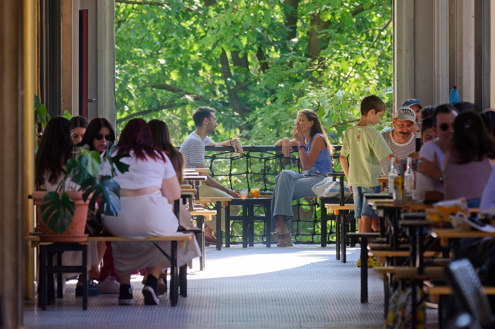
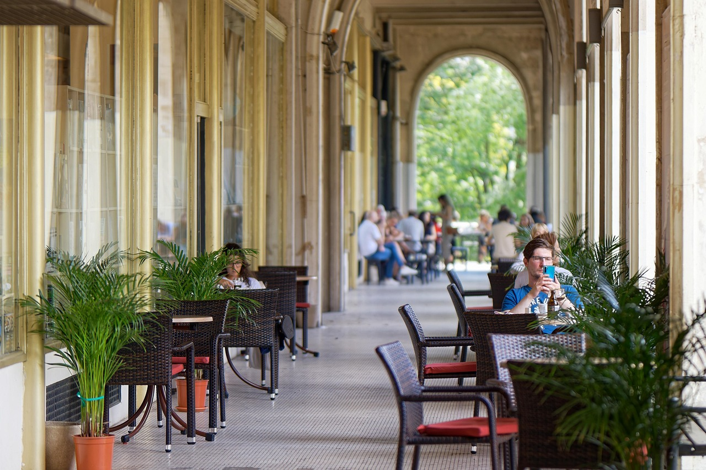

Terasa de vară Dristor
Relaxează-te aproape de Dristor 2
O terasă primitoare, aproape de stația Dristor 2.


Despre terasă
Terasa de vară Dristor te așteaptă cu un cadru plăcut, la doar câțiva pași de stația Dristor 2 din București. Este locul ideal pentru o masă relaxată sau întâlniri cu prietenii, într-o atmosferă de vară.
Lângă stația Dristor 2
-
Locație centrală
La câțiva pași de metrou
-
Atmosferă relaxantă
Terasa perfectă vara
-
Potrivit pentru grupuri
Terasă primitoare, aproape de Dristor 2
Vino pe terasă
Ne găsești lângă stația Dristor 2, în București. Sună sau scrie-ne dacă vrei să vii cu prietenii.
- Telefon0726 901 843
- Emailrestaurantdristor2015@gmail.com